ATE Loadboards and the Art of Engineering the Signal Path Capacitance for Power, Current, and Slew Rate
Robert Smith, Heid Barnes, Verigy
Paper-ID: 121176 April 2010
Abstract
Electrical Engineering deals with the simple task of getting an electrical signal from one point to another. Automated Test Equipment must ensure that the measurement of an electrical signal accurately represents the signal not just at the ATE pogo pin, but across the DUT board at the Device-Under-Test (DUT). Every method of electrical signal transmission from one point to another has a capacitance, inductance, and resistance associated with it that will interact with the desired signal. The affect of capacitance on the desired electrical signal as one goes from DC to multi-Gigabit data rates or from tiny Pico-Amp current measurements to 50 Amp microprocessor power distribution networks is not always intuitive. The physics of how the capacitance along a signal path works does not change, but the properties of the signal that one is sending can vary dramatically and it is very educational to look at each of these effects so that one can design an optimal ATE DUT board Signal Path for a given application.
There are three main applications that require correct design of the signal path capacitance, the measurement of low level leakage currents, the transmission of high frequency digital and RF signals, and the delivery of power. This paper will apply the basic equations of capacitance to each application and show how the optimum capacitance value can vary significantly between them. The pico-Amp design will look at the benefits of guard trace design. The high speed application will address the age old question of when is a signal path a lumped capacitance and when does it transition to distributed characteristic capacitance. The current delivering power supply side will show that capacitors are never ideal and how decoupling should be engineered for a given application. The paper will conclude by looking at what happens when all of these requirements are combined for high performance at-speed DUT testing on a single loadboard.
Key Words: Capacitance, Loadboard, Pico-Amps, Settling Time, Impedance, Power Distribution
Introduction
Capacitance is a fundamental property of electrical circuits that can be used in a variety of ways when designing the final DUT board connection from the automatic test equipment (ATE) to the device-under-test (DUT). Numerous papers have been written on the effects of capacitance for a given application, but none deal with bringing them all together to see how they interact when designing high performance test fixtures. The intent is to bring the different perspectives of capacitance together into one reference to see how one application may benefit from the other. After a brief description of the fundamental resistance, capacitance, and inductance properties of a passive electrical signal path between the DUT and the ATE equipment the paper will look into three main areas where signal path capacitance is critical for performance.
The first application will be to explore very low level pico-Amp DC type measurements and the critical aspects of preventing capacitive leakage. Moving from DC measurements to high speed signals will highlight the time varying nature of capacitance and provide insights into lumped versus distributed transmission line models of a signal path. Although it may not seem like a signal path, the power distribution network provides another perspective on the capacitive requirements for a passive connection between the DUT and the ATE system. Combining all of these requirements into a single DUT board has the potential for lowering the cost of test of modern day high density mixed signal devices with ever increasing data rates and decreasing supply voltages.
General Properties of the ATE to DUT Signal Path
At first glance it would appear that low level DC measurements, high frequency signaling, and power distribution are totally different applications. A closer look shows that they all deal with the basic resistive, inductive, and capacitive elements of an electrical circuit and it is instructional to review how these values are determined for each of these applications. Identifying the commonality and differences in how the capacitance reacts with resistive and inductive elements in different situations will lead to less reliance on "black magic" rules of thumb and an improved ability to engineer a DUT board design for optimum performance.
The three basic elements: Resistance (R) or the ratio of the applied voltage to the resulting current; Inductance (L) which is directly affected by the applied frequency; and Capacitance (C) which is inversely affected by the applied frequency can all be determined from the signal path topology and the spectral content of the signal.0 This frequency dependence shows that the response for a DC signal will not be the same as when an AC signal is applied and this will result in different requirements for the optimum physical signal path topology. Something that looks like 50 Ωs at high speeds can measure in the mΩ for an applied DC voltage.
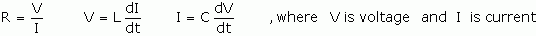
Equation 1
The physical topology of a signal path will determine the actual values of R, L, and C as shown in figure 1. Trace width, trace thickness, conductor material, dielectric material, and distance to the return path are all important factors in determining the electrical characteristics.
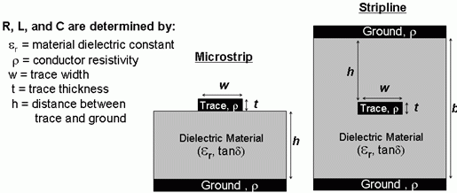
Figure 1. The trace topology determines the characteristic R, L, and C for a given signal path.
It is customary to break a given signal path topology down into a unit section so that it is independent of the length. When this is done, a very unique relation is obtained showing that there is a characteristic impedance that relates all of the R, L, and C terms together. Further simplifying for the case of low resistance since by definition the intent of a signal path is to have low R losses, it shows that L and C are inversely related and that the square root of their ratio determines the impedance as shown in the following equation:
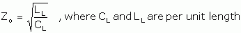
Equation 2
It can also be shown that the time it takes for a signal to travel down a transmission line, time delay, is related to the total C and L of the path. Combining this with the equation for Zo provides a very simple method for determining the total capacitance of a given signal path.
Equation 3
Equation 4
To understand the relation of the physical topology with characteristic impedance, one can look at the equations for microstrip and stripline topologies that were shown in Figure 1. [3]
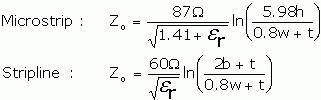
Equation 5
It is also worth remembering that the relative dielectric constant () compares the effect of an insulator on the capacitance of a conductor pair with that of the capacitance of the conductor pair in a vacuum. The of air is very close to the value of one for a vacuum and provides a reference for comparing the charge storage capability of different materials.
Although R is small, it is still worth looking at how it is determined from the physical topology and that at high frequencies the skin effect will cause an increase in the signal path resistance, figure 2. The resistance is simply a function of the resistivity of the conductor divided by the cross sectional area of the signal path times the total length. Rapidly changing currents from an AC signal find lower inductance at the outside edges of the signal trace forcing the majority of AC current to flow on the outside edges and not use the full cross sectional area. A smaller effective cross sectional area results in higher R. At 900 MHz this skin depth where 63 % of the current is flowing can be quite small at only 6.6 microns (86 micro-inches). [3]
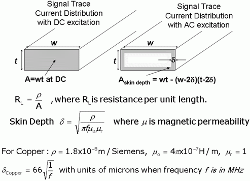
Figure 2. Signal path resistance at DC and with skin effect losses at higher frequencies.
These are some of the fundamental relations between R, L, and C on a signal path. The following sections will utilize these relations to identify the critical design trade-offs for DC, high speed/high frequency, and power distribution applications.
Loadboard Design for Low Level DC Pico-Amp Measurements
Based on this information we can see the signal requirements for DC design. For extremely low current traces we need to keep capacitance to a minimum to minimize pre-charging of the trace by minimizing the trace width.
Leakage currents need to be minimized for precise current measurements again by minimizing trace width. The minimizing of the trace width has an affect on trace resistance. For resistance, the reducing of the metal trace width causes height to increase to keep the metal volume constant for equal R. (Minimum Trace Width, Minimum R) [6].
Another unique DC circuit characteristic is low currents follow the path of least resistance R and not the path of least impedance Z. (Conductor Volume) Because of this optimum DC trace geometries need to be different than high speed signals with Z requirements.
Plotting of Z geometries will show that varying only the trace width will yield changes in trace impedance, figure 3.
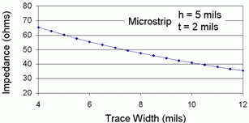
Figure 3: Impedance decreases as the trace width increases.
Also if dielectric height is increased the impedance will increase as shown in figure 4.
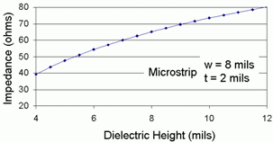
Figure 4: Impedance increases as the distance between signal and ground increases.
Let us examine in detail one of the critical elements mentioned above, that of keeping leakage to a minimum. What is leakage current and what is the effect on load board design?
Leakage current is a function of the conductor area, the distance between adjacent conductors, the volumetric and/or surface resistively of the material supporting the conductors, and the voltage between the conductors.
Its effect is that the greater the distance or separation of the conductors the lower the leakage current and the closer the distance between conductors, the higher the leakage current. Also, the larger the area of the conductors, the higher the leakage currents will be on the loadboard.
DC Guard Design for Low Leakage
There is a technique that can be used to address this DC leakage in load board design. This technique is called guarding. What is guarding? It is the utilization of a voltage equal in potential to the signal trace carrying the DC signal of interest. This voltage is applied to a low impedance trace that is parallel and close to the signal of interest. This guard voltage is derived from the signal of interest DC value. The signal of interest is used as the input to a unity gain amplifier and is called a driven guard. The output of this amplifier is low impedance and can typically supply currents in the range of 10 to 50 mA.
This guard voltage potential will greatly reduce any interfering voltage or current and will also pre-charge any dielectric between the guard and the high impedance conductor.0
What is pre-charging? It is a technique used to speed up measurement time. It is essentially the connecting of the source to the load, force the stimulus, wait, and then move to the measure step. This enables the path to be fully charged and stabilized before the measurement is made.
What are the details of guard voltage? Let's examine the details of guarding to further explain how it works.
Here is an example of an unguarded circuit, figure 5. In it we are forcing a current, IS, through an unknown resistance RDUT and want to measure the resulting voltage, VM. Let's assume our voltmeter, VM, has infinite input impedance and our PCB board is FR4 material.
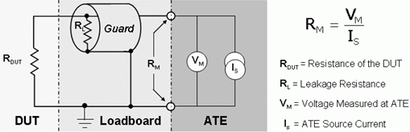
Figure 5. Example of an unguarded circuit.
Reconfiguring the above circuit into an equivalent circuit model we see the actual circuit operation.
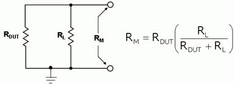
Figure 6. Equivalent model of an unguarded circuit
If we assume our voltmeter has infinite input impedance we would expect the load to be: RM = VM/IS. However there is our load, RDUT, and a leakage path, RL. This primary leakage path, RL, is the PCB material and other elements. It can be seen that RL is in parallel with our load.
How do we deal with this leakage path?
It can be compensated by using a unity gain amplifier (or driven guard) and a guard trace around our signal trace. Below is a diagram showing this guard operation.
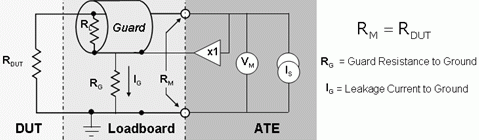
Figure 7. Example of a driven guard.
Using guarding the voltage across RL is essentially zero and all of the current IS now flows through the load, RDUT. It should be noted that we did NOT eliminate the leakage we just move it. The low impedance output of the unity gain amplifier is now supplying this leakage current to all of the leakage paths on the load board [9].
DC Settling Time
Another important circuit DUT board requirement in precision DC circuits is that of settling time. This is especially important when measuring circuits with high R values. Minimizing settling time will result is faster measurements. This is also very important in high speed DUT board design but it manifests itself in a different way. For high speed circuits it is the effect of transmission lines reflections.
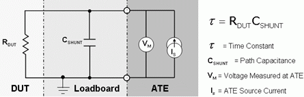
Figure 8. Signal path capacitance charging.
For DC circuits that have high R values all shunt capacitance values must be charged before the circuit is settled out. Because of this it is very important to keep these shunt capacitances values small.
An example of this is shown in the following circuit.
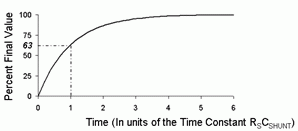
Figure 9. RC time constant for charging up the signal path capacitance.
If Cshunt is 10 pF and the DUT test RDUT = 1TΩ then the RC time constant is 10 seconds. This time constant yields a settling time of 50 seconds. Guarding can be used to help minimize this time. A 50 ohm transmission line that is 30 cm long will have a total C shunt of TD/50 from equation 4, which is ~41 pF for FR4 with an =4.4. This drops to 27 pF for a 70 ohm characteristic impedance and an =3.6 for higher performance PCB materials.
Example Full-Path Pico-Amp Loadboard Design
Minimizing capacitance in DC test fixture design has unique issues. Unlike high speed design the frequency is not a factor, so the DC capacitance is lumped. The load board is not a stand alone element in the circuit and all interface elements must be considered and included because they add additional capacitance. These elements include: the guarded POGO tower and the guarded probe card.
This is the full, complete signal path that identifies the key elements for best design practices to keep the capacitance to a minimum. For critical, low leakage circuit paths this full path must be characterized and fully understood for optimum performance.
Precise DC parametric work has been performed at a Verigy customer site. To understand the full trace capacitance the actual loadboard, pogo tower, and probe card were assembled and a detailed measurement analysis was performed. The complete test set-up was as follows:
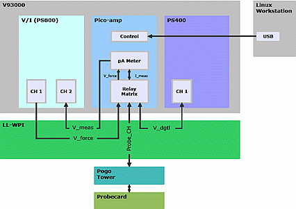
Figure 10. 93000 ATE sub-system for measuring pico-amps.
The probe card was attached to the top of the pogo tower and a capacitance measurement was made using an Agilent 4284A impedance meter, figure 11.
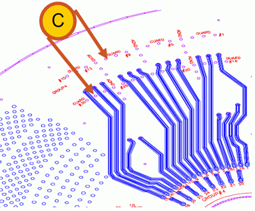
Figure 11. Total capacitance calibration for improving the resolution of small changes in capacitance values.
With this complete setup the resulting measurements were recorded:
Total Capacitance Measurements with FULL STACK UP TABLE
FULL STACK UP = Configuration used ACTUAL PRODUCTION PROBE CARD
Total Trace Measurements:
Capacitance C = 374.67 pF (4284 Function = Cp - G)
Conductance G = 0.0054 uS (4284 Function = Cp - G)
Inductance = 7 uH (4284 Function = Ls - Rs)
Resistance = 8.5 Ω (4284 Function = Ls - Rs)
As a check, the measurement could resolve the addition of a 30pF shunt capacitor.
It can be seen that these measurements utilizing a guarded trace have resulted in pico-amp resolution that can be used to determine small variations in the DUT capacitance. The success of the pico-amp application relies on reducing the leakage capacitance by using guarded traces and higher impedance traces. [6]
Transitioning from Lumped Elements to Transmission Lines
The fundamental problem with lumped element design is that it is a specific case of the more general solution of how a signal path reacts to the application of a time varying signal. Very few signals are DC forever, and the expectation that one can apply a voltage or current at one end of a trace and have it instantaneously show up at the other end is not realistic. When a signal is applied to a signal path, it can only react to the topology that is directly in front of it. Oliver Heaviside in the late 1800's applied this knowledge by breaking down the signal path into small R, L, G, and C elements distributed evenly along a signal path. He then utilized calculus to show what happens when a time varying sinusoidal signal is applied. The resulting transmission line theory accurately predicts the problem of reflections or settling time on a signal path.0
The simplest case of a well designed transmission line with low resistance R and negligible conductance G results in the following transmission line properties:
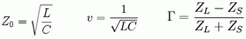
Figure 12. Transmission lines have a characteristic impedance seen by an applied signal and any changes in impedance along the signal path will result in some of the energy being reflected back to the source.
Applying this reflection equation to the extreme cases of a signal path ending in a short or a signal path ending into an open sets the boundaries for worst case reflections, or settling time on a signal path. In the case of a short, the signal starts out with only the ability to see the characteristic Zo impedance which then sets the voltage +V that travels down the signal path. Once the short is reached, the voltage must go to zero since by definition the short is to ground or 0 volts. This sends a negative -V back along the signal path. The time it takes to get back to the source is based on the velocity and determines how long the source must wait before it has any information on what is at the end of the signal path. Since an inductor looks like a short at DC, then any excess inductance in the signal path will produce a negative voltage reflection. In the case of the open, it is a simple matter of realizing that the current traveling down the signal path with the applied voltage V+ cannot magically disappear and therefore must return back along the signal path effectively "charging" up the line to 2*V+ since now there is twice the current flowing in the signal path until the information can get back to the source. A capacitor looks like an open at DC, so any excess capacitance will result in a positive voltage reflection. [8]
The special case of zero reflections happens when the characteristic impedance Zo matches the resistance at the end of the signal path and no adjustments are required in the voltages and currents traveling down the signal path. The interesting thing to note here is that there is no "settling time" if one terminates in the characteristic impedance, just a delay in how long it takes the signal to travel down the signal path. This helps to provide an understanding of when lumped circuit design transitions to transmission line effects and clearly shows that it will depend on the termination, the distance to the termination, and the magnitude of the reflections relative to the signal.
It is important to note that the magnitude of the reflection is a percentage of the applied voltage and in the case of a signal with a finite rise-time or slew rate, then the reflection from an impedance discontinuity is making continuous adjustments to the reflected voltage as the applied voltage ramps up or down past the impedance change. In the extreme case, the slew rate is very slow and the voltage difference between the source and the load is very small resulting in a small reflection that arrives back at the source so that it can make continuous small adjustments to correct for the end termination. In this case the signal has enough time to travel to the end of the signal path and return back to the source in a continuous feedback so that the ramping edge of a digital signal only sees a small step or ripple based on the delta voltage that has occurred and not the full step voltage of the one and zero levels. The transition from lumped to transmission line theory will still depend on the termination, but even for the worst case of an open, or a high impedance DUT receiver, a rising or falling edge that is 10 times the length of the signal path will result in the reflection being applied to only 1/10th of the voltage step and will return to the source in time to effectively modify the edge rate of the signal but not cause any significant ripples in the middle of the eye opening for a digital signal.
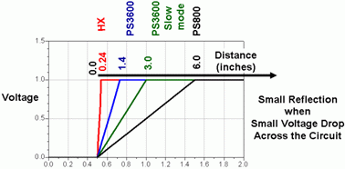
Figure 13. If the circuit is much smaller then the distance occupied by the rising or falling signal edge, then the delta voltage drop across impedance discontinuities or between source and load is small and reflections will be minimal.
The final problem with impedance reflections is that most signal paths are not perfect and there can be multiple impedance discontinuities which can create a filtering effect as a twice reflected signal heads back in the original direction but delayed in time. Figure 14 shows how this twice reflected signal results in a resonance or cancellation of the signal at frequencies that have a ¼ wavelength that is equal to the distance between the two discontinuities or multiples of this ¼ wavelength distance. A stub or short signal path branch can also cause a reflection that travels back in the same direction as the original signal and again the resonant frequencies occur when the stub is ¼ the wavelength causing the down and back length to be ½ wavelength and 180 degrees out of phase. If the length of discontinuity is shorter then the ¼ wavelength or shorter then the rise-time of the signal then the second reflection arrives fast enough to start modifying the same rising edge and the effective impedance discontinuity and reflections are reduced.
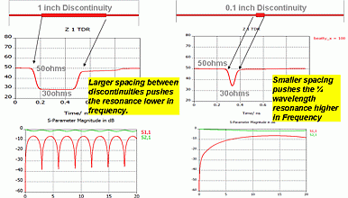
Figure 14. Multiple discontinuities can cause a reflection of the desired signal to be added to the forward traveling signal but delayed in time. Significant signal degradation occurs at frequencies where the impedance discontinuities are multiples of ¼ the wavelength apart.
ATE systems with cabling from the pin electronics to the DUT board and then traces across the PCB easily reach time delays of 3 nS and even signals in the low Mbps will benefit in matching the source and load impedance with the transmission line. Small discontinuities such as vias, relays, connectors, etc have minimal effect until the low Gbps where the impedance discontinuities then start to have a length that is a significant fraction of the wavelength and if the impedance is not controlled multiple reflections can occur. [1]
The 50 ohm impedance is a trade-off between low resistive losses, source and load impedances, and achievable transmission line dimensions. However, at lower speeds the 50ohm termination can draw too much current and bias terminations become popular since they look like a short at higher speeds while providing the necessary voltage drop to minimize DC power consumption from the DUT.
The other problem at high speeds is that the signal cannot tell the difference between adjacent conductors that are ground and those of a neighboring signal or guard trace. The simplest way of minimizing this loss of signal or crosstalk to adjacent conductors is by making sure that the signal is closer to the intended ground return then to any other conductor path. Providing a distance of 5 times the trace width can reduce crosstalk to adjacent signal traces to less then 5 %. If a guard trace is used at high speeds to minimize crosstalk to other traces on a board, then it must be well grounded as shown in figure 15 to prevent the guard trace from resonating and actually causing less isolation at the resonant frequencies.
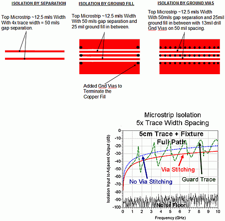
Figure 15. Crosstalk with 5x Trace Width separation and the effect of adding a guard trace.
The resonance in the guard trace makes sense if one realizes that the coupled energy is seeing a "characteristic impedance" of the guard trace and if this is not uniform down the line then the currents traveling down the guard trace will reflect from significant changes in impedance such as a narrow guard trace with ~50 ohms impedance suddenly terminated by a via to ground. To improve isolation the rule of thumb is that the ground vias in a guard trace need to be ~1/10th the wavelength of the highest frequency of interest.
Capacitor Selection for Power Distribution Networks
The design of a power distribution network can be quite challenging when one is trying to decipher terms like noise decoupling and power supply droop. Is the capacitor shorting out the high frequency signals to ground, or is it supplying local charge storage to prevent supply droop? The use of an ideal capacitor would provide instantaneous current sourcing and sinking to provide a stable voltage supply. In reality a capacitor also includes series resistance and inductance that causes a finite response time and leads to resonances or frequencies where there is an exponential decrease in impedance as the L and C terms balance and form a resonance. [5]
Since there is no such thing as an ideal capacitor, then one must select a range of capacitors to do the job of preventing the propagation of noise on the power supply rail and providing capacitors that can deliver charge fast enough to the device to prevent Voltage droop. Figure 16 shows that the maximum power demands can occur at multiple frequencies across a wide band, making it necessary to design the power distribution network with a low impedance across a wide bandwidth and not a single frequency.
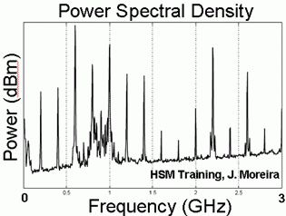
Figure 16. Example of the broad band power density at VDD for a DDR3 device running at 1.6Gbps.
The calculation consists of determining what is the acceptable voltage droop or max ripple allowed on a supply rail, and then assuming that while one is waiting the typical 5 uS for an ATE supply to respond to the sense line feedback from the DUT, then any quick changes in power demand must be provided by DUT board capacitors with low resistance and low inductance. Tantalum capacitors have a tremendous amount of charge storage capability but higher series inductance and resistance so they are used for the lower frequencies. Ceramic capacitors have less charge storage capability but resistance is low and the inductance decreases as the package size gets smaller so they can be used for the mid to high range MHz frequencies. Multiple ceramic capacitors are often used in parallel to make up for the smaller storage capability and to lower the effective R and L values by having multiple ones in parallel. The highest frequency charge storage that can be provided on a DUT board is the power plane capacitance to an adjacent ground plane. This capacitance is generally only in the nF, but is maximized by using higher dielectric materials that are as thin as possible between the ground and power planes, and by placing the power plane as close to the DUT as possible to minimize the inductance of the via connections.
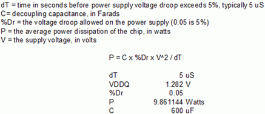
Equation 6
The simple calculation in Equation 6 for preventing Voltage droop yields the ideal or total capacitance that is needed. Additional spreadsheet calculations are required to determine the correct combination of capacitors with their varying series L and R components to maintain a relatively constant low impedance across the wide bandwidth needed by the power supply rail on a high speed device. In the case of low noise applications, the typical 5% voltage droop may not be good enough and allowing a maximum of only 1% droop will increase the amount of capacitance that is required.
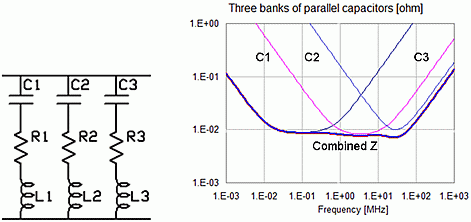
Figure 17. Example of three types of capacitance storage on a DUT board and the frequency bands they cover. [7]
The simple C with series R and L model in figure 1 shows how three different capacitors with low impedance resonances at three different frequencies can add together to provide a low impedance across a broad band of frequencies. This could easily represent the slower response bulk tantalum capacitors, the higher speed ceramics, and then the very small but fast capacitance of a power plane with minimal separation to the ground plane. Selecting two many capacitors of one value will have the undesirable affect of causing extremely low impedance at one frequency which can then have an anti resonance with another capacitor that will create an impedance spike and the potential for resonances with the ATE supply. Capacitors with controlled equivalent series resistance (ESR) capacitors can help reduce these resonances and reduce the quantities of required capacitors for the same broadband response. [7]
At the high frequency end one must use capacitors that reduce the series inductance and starting even in the 100's of MHz the PCB footprint design can add unwanted inductance with trace connections and vias, figure 18. Socket pin length and package leads also add to the problem of series inductance and it is often said that a good DUT design will provide on-die capacitance for supply needs in the GHz range and that there is little that one can do on the PCB.
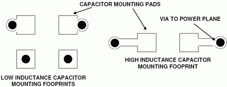
Figure 18. The decoupling capacitors used for the 100 MHz range will need minimal via inductance for the PCB footprint.
Some of the layout tricks to improve the high frequency response of the capacitor is to place them directly across the power and ground pins on the DUT, or even stack capacitors to increase the C for a given footprint without significantly increasing the inductance. The highest frequency capacitance of the power plane to ground plane also benefits from being placed as close to the DUT as possible. However, for ATE applications the stack-up symmetry requirements make this difficult and historically power planes have been placed in the middle of the loadboard.
Conclusion
Exploring the effects of capacitance for low leakage pico-amp measurements, for rapidly changing digital or RF signal transmission, and for power distribution networks provides a unique insight into how there is no such thing as an ideal capacitor. The transmission line theory of distributed C and L results in some simple mathematics to quickly estimate the total C of a DC signal path, and also the ripple caused by impedance discontinuities for a given signal slew rate. The idea of impedance can also be applied to the power distribution system, and again it is the frequency dependent impedance that must be designed using multiple values of capacitors to achieve a flat broad band response and avoid resonances that could cause significant supply droop.
References
[1] J. Moreira, M. Tsai, J. Kenton, H. Barnes, and D. Faller "PCB Loadboard Design Challenges for Multi-Gigabit Devices in Automated Test Applications", IEC DesignCon 2006.
[2] E. Bogatin, Signal Integrity Simplified, Prentice Hall, New Jersey, 2004
[3] H. Johnson and M. Graham, High Speed Digital Design, A Handbook of Black Magic , Prentice Hall Publishing, ISBN 0-13-395724-1
[4] H. Ott, Noise Reduction Techniques in Electronic Systems, Second Edition, John Wiley & Sons, ISBN 0-471-85068
[5] J. Brenner, R.J. Smith, "Optimizing DC Connectivity" Voice 2007.
[6] R.J. Smith "Loadboard Guidelines and Best Practices for Low Level DC Current Testing", Voice 2006.
[7] I. Novak, Characterization of Power Distribution Networks, Artech House, Inc., 2007
[8] J. Moreira and H. Werkman, Testing High Speed Digital Interfaces with Automated Test Equipment, Artech House, Inc. 2010
[9] Keithley Instruments, Low Level Measurement Handbook 6th Edition, 2010